40 سؤال
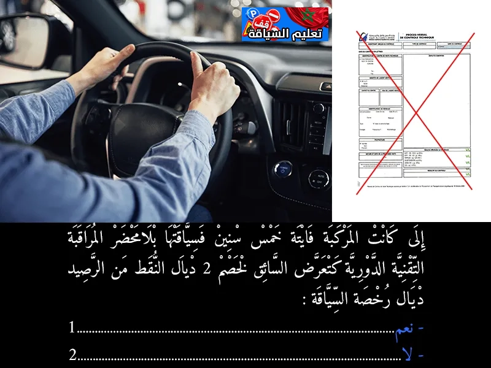
الجواب الصحيح: 2
عندما تتجاوز عربة في عُمُرِها 5 سنوات فهي تصبح ملزمة على الخضوع للفحص التقني (لافيزيت) كل عام. إذا قام السائق بسياقة عربة تجاوزت 5 سنوات في عُمُرِها دون التّوفر على شهادة الفحص التقني فهذه تعتبر مخالفة من الدرجة الأولى، ويتعرض السائق إلى خصم 3 نقاط من رصيد رخصة السياقة الخاصة به. بالإضافة إلى غرامة قدرها 400 درهم في حالة سدادها فورا او داخل أجل 24 ساعة او سوف تصبح 500 درهم بعد ذلك في اجل أسبوعين او 700 درهم في أجل شهر.
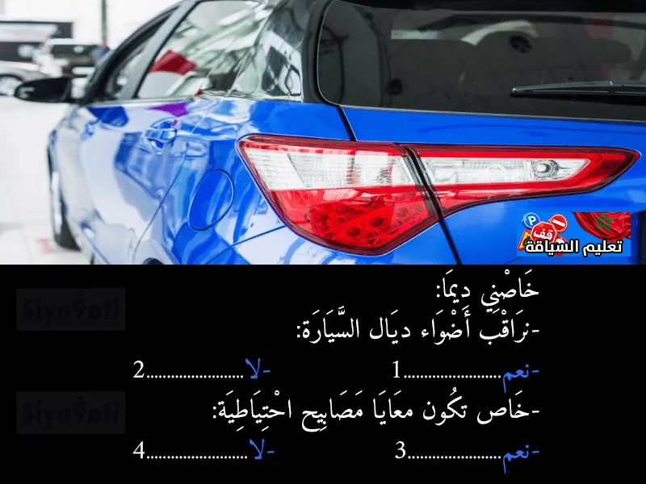
الجواب الصحيح: 1 و 3
تعتبر الأضواء من أهم وسائل السلامة على الطريق، فهي تساعدك على رؤية الطريق بوضوح وتنبيه السائقين الآخرين إلى وجودك وإلى أي تغييرات في مسارك، خاصة في ظروف القيادة الليلية أو في الأحوال الجوية السيئة. إذن نعم يجب على السائق مراقبة أضواء السيارة بانتظام للتأكد من أنها تعمل بشكل صحيح. كما يُفضل امتلاك مصابيح احتياطية لتجنب أي مشاكل أثناء السياقة. الجواب الصحيح هو رقم 1 و 3.
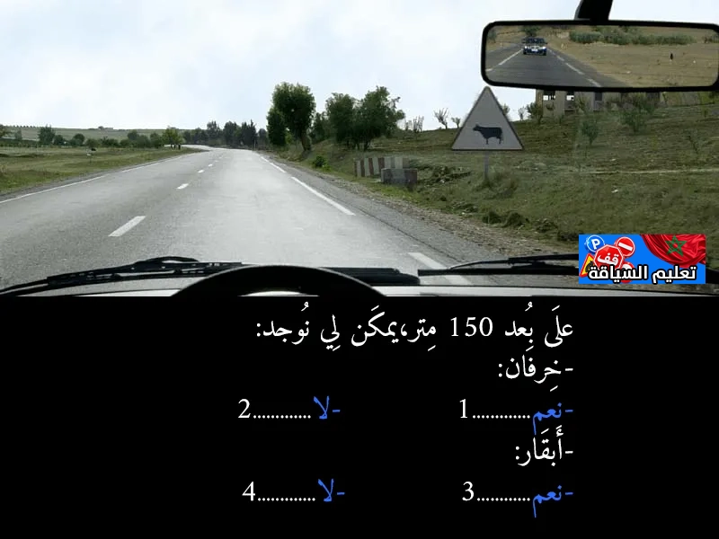
الجواب الصحيح: 1 و 3
عند رؤية علامة الخطر التي تحتوي على رسم بقرة، فهي تشير إلى وجود خطر مرور حيوانات أليفة على بعد 150 متر (نتواجد خارج المجال الحضري) على الرغم من أن الرسم يظهر بقرة، إلا أن ذلك لا يعني بالضرورة وجود أبقار فقط، فقد يجد السائق خرفان أو أي حيوانات أليفة أخرى. لذلك من المهم دائمًا أن تكون متيقظًا ومستعدًا لتجنب الحيوانات التي قد تظهر فجأة على الطريق. إذن الجواب الصحيح هو رقم 1 و 3.
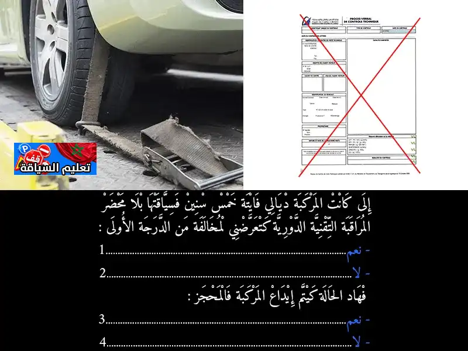
الجواب الصحيح: 1 و 4
إذا كانت السيارة تجاوز عمرها 5 سنوات، فهي تحتاج إلى الفحص التقني كل عام. إذا قمت بقيادة السيارة بدون محضر المراقبة التقنية الدورية، فهذا سيعرضك لمخالفة من الدرجة الأولى وغرامة قدرها 400 درهم إذا قمت بدفعها في غضون 24 ساعة. وإذا تأخرت، تصبح الغرامة 500 درهم في غضون أسبوعين، أو 700 درهم إذا دفعت في غضون شهر. لن يتم إيداع المركبة في الحجز، بل سيقوم عون محرر المحضر بالاحتفاظ بشهادة التسجيل أو سند الملكية، وسيعطيك وصل الاحتفاظ بشهادة التسجيل الذي يعتبر إذنًا للقيادة صالحًا لمدة 7 أيام، وهو فترة كافية لإجراء الفحص التقني. بعد ذلك، يجب على السائق إجراء الفحص التقني والعودة إلى عون محرر المحضر مع نسخة من الفحص التقني الجديد. سيقوم العون بمقارنة النسخة مع نتيجة الفحص التقني الجديدة، وإذا كانت النتيجة إيجابية (FAVORABLE)، سيعيد إليك شهادة التسجيل الخاصة بك. الإجابة الصحيح هي رقم 1 و 4.
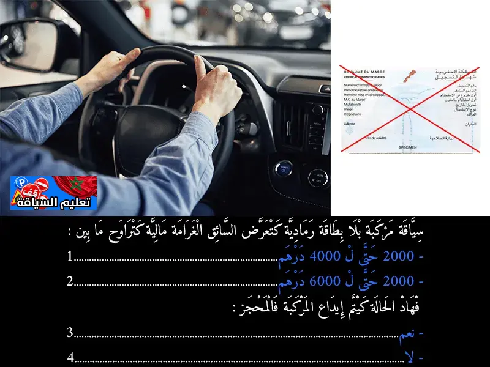
الجواب الصحيح: 2 و 3
سياقة مركبة دون بطاقة رمادية، تعرِّض السائق إلى غرامة مالية تتراوح بين 2000 درهم و 6000 درهم، بالإضافة لإيداع المركبة في المحجز.
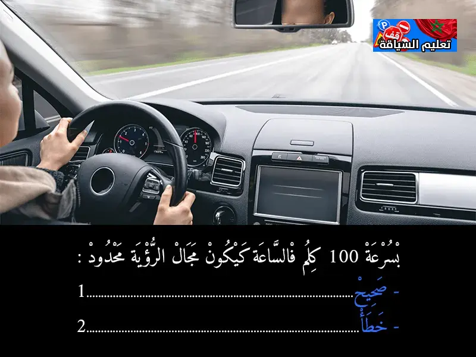
الجواب الصحيح: 1
نعم، عند القيادة بسرعة 100 كلم في الساعة، يكون مجال الرؤية محدودًا. لأنه عند زيادة السرعة، يَقِلْ الوقت المتاح للسائق لمعالجة المعلومات المرئية، مما يؤدي إلى تضييق مجال الرؤية. هذا يعني أن السائق يرى بشكل أقل وضوحًا الأشياء المحيطة به ويميل إلى التركيز أكثر على الطريق أمامه مباشرة، مما يقلل من القدرة على رؤية الأشياء الجانبية أو البعيدة بوضوح. بالإضافة إلى ذلك، قد تتأثر الرؤية بسبب العوامل البيئية مثل الإضاءة والأحوال الجوية، مما يزيد من أهمية تقليل السرعة للحفاظ على السلامة. الجواب الصحيح هو رقم 1.
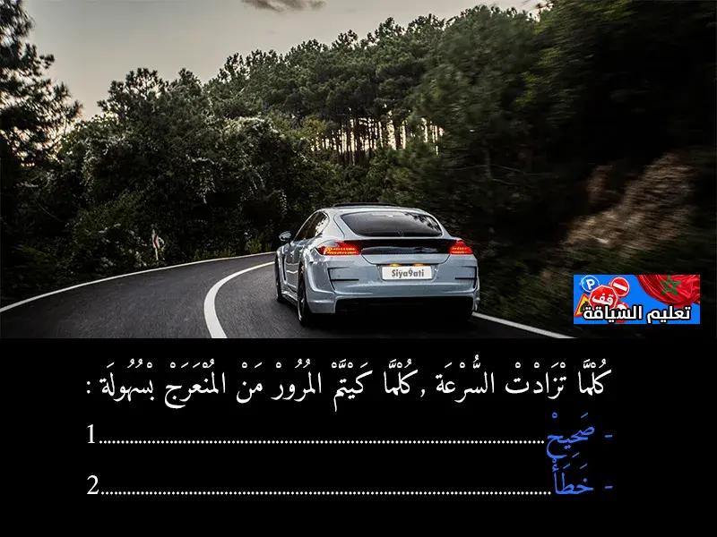
الجواب الصحيح: 2
عند زيادة السرعة أثناء المرور في المنعرجات، يكون من الصعب التحكم في السيارة بسبب قوى الجاذبية والقوة النابذة. هذه القوى تدفع السيارة للخارج، مما يزيد من خطر فقدان السيطرة والانزلاق. السياقة بسرعة منخفضة في المنعرجات تتيح للسائق الحفاظ على السيطرة على السيارة بشكل أفضل، مما يقلل من احتمالية الحوادث. الجواب الصحيح هو رقم 2.
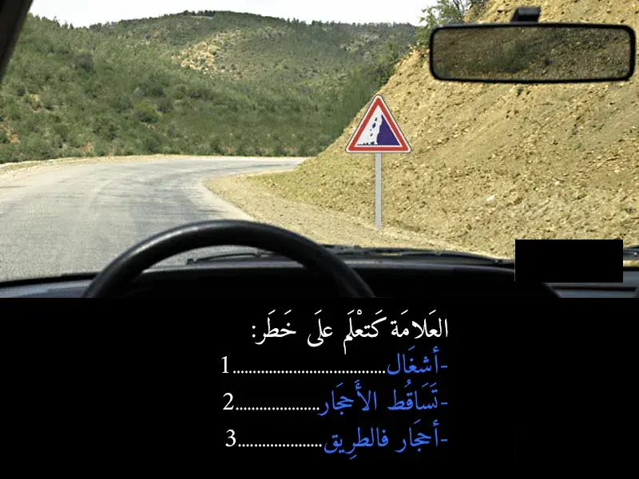
الجواب الصحيح: 2 و 3
العلامة الطّرقية الظاهرة في هذه الحالة فهي تعني أمرين، الأول وهو خطر تساقط الأحجار من أعلى الجبال، والمعنى الثاني وهو خطر وجود أحجار على الطّريق، وهذه الأخطار سوف نجدها إبتداء من بعد 150 متر بما أننا خارج المجال الحضري. الجواب الصحيح هو رقم 2 و 3.
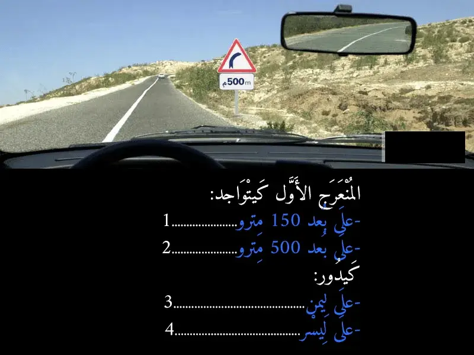
الجواب الصحيح: 2 و 3
العلامة الطّرقية الظاهرة في الصورة فهي تعني منعرج خطير على بعد 150 متر بما أنّنا خارج المجال الحضري، لكن يوجد علامة تكميلية أسفلها لذلك سوف نلغي القاعدة التي تقول بعد 150 متر سوف نجد المنعرج الخطير ⚠️، بل سوف نجد خطر المنعرج على بعد 500 متر وليس 150 متر. وإتجاه المنعرج سوف يكون على اليمين كما توضح العلامة الطّرقية, الجواب الصحيح هو رقم 2 و 3.
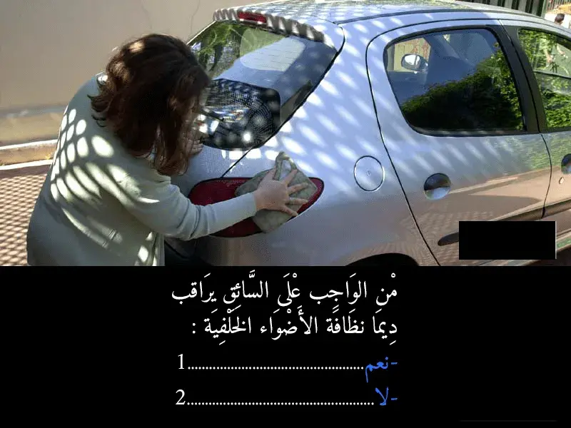
الجواب الصحيح: 1
الأضواء الخلفية كتلعب دور مهم فسلامة السياقة، حيت كيبينو للمركبات الأخرى فين كاينة الطوموبيل وكينبههم ملي كاتستعمل الفرامل أو أثناء الإنعطاف. إلا كانت الأضواء الخلفية موسخة، يمكن تتسد الرؤية أو تنقص وضوحها، وهادشي كييزيد من خطر الحوادث. دابا، خاص السائق يتأكد بلي الأضواء الخلفية نقية وكتخدم مزيان فكل وقت باش يضمن سلامتو وسلامة الآخرين فالطريق. الجواب الصحيح هو رقم 1.
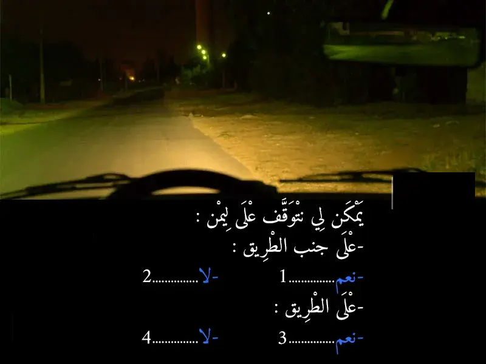
الجواب الصحيح: 1 و 4
الوقوف على جنب الطّريق فهو مسموح في هذه الحالة لانه لا توجد علامة طرقية تمنعني من الوقوف أو التوّقف، التوقّف على جنب الطريق، كايكون السائق خارج المسار اللي كيدوزو فيه السيارات، وهادشي كيكون آمن ومسموح. ولكن إلا وقفت على الطريق، كتعرقل السير وكتهدد سلامة السائقين الآخرين، وهادشي ما مسموحش وممنوع. ديما خاص السائق يتوقف في بلاصة آمنة وخارج الطريق (اذا لم يكن هنالك تشوير طرقي يمنع التوقّف) باش تضمن سلامة الجميع. الجواب الصحيح هو رقم 1 و 4.
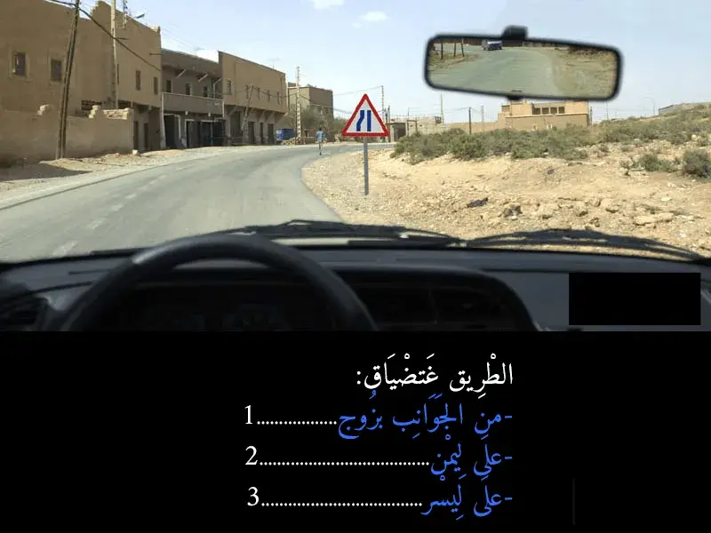
الجواب الصحيح: 3
العلامة الطّرقية تعني خطر الطّريق سوف تصبح ضيِّقة من الجهة اليسرى على بعد 50 متر بما أنّنا داخل المجال الحضري. الجواب الصحيح هو رقم 3.
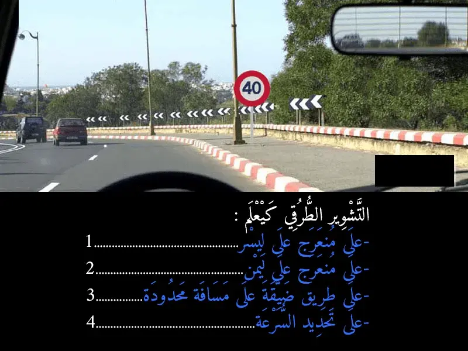
الجواب الصحيح: 1 و 4
اد التشوير كيقولينا بلي كاين منعرج على اليسر، والسرعة القصوى محددة في 40 كلم في الساعة. العلامة اللي فيها السهم الأبيض على الأسود كتورينا اتجاه المنعرج لليسار (أرمة منعرج على اليسار) وعلامة 40 كتحدد السرعة القصوى اللي خاصنا ما نتجاوزهاش لضمان السلامة فالطريق. يعني خاصنا نردو البال ونخففو السرعة قبل ما نوصلو للمنعرج. الجواب الصحيح هو رقم 1 و 4.
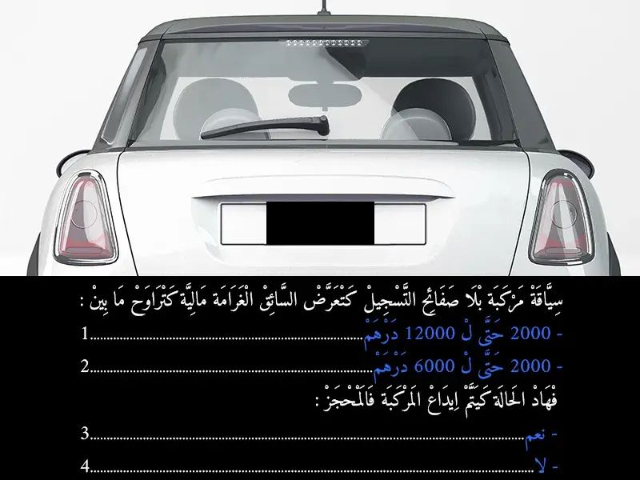
الجواب الصحيح: 1 و 3
حسب المادة 161 من مدونة السير فإنه يعاقب السائق بغرامة من ألفين (2.000) إلى اثني عشر ألف (12.000) درهم، كل سائق مركبة، خاضعة للتسجيل، لا تحمل صفائح التسجيل. وتودع المركبة المعنية في المحجز إلى حين وضع حد للمخالفة. وإذا تعذر ذلك داخل الآجال التي تحددها المحكمة، تأمر هذه الأخيرة بسحب المركبة المعنية من السير بصفة نهائية. الجواب الصحيح هو رقم 1 و 3.
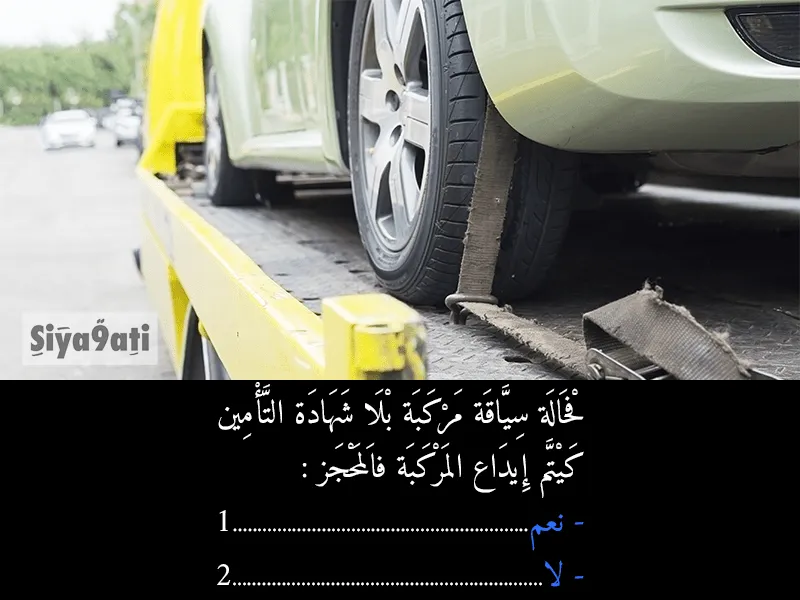
الجواب الصحيح: 1
حسب المادة رقم 111 من مدونة السير، يصدر ضابط الشرطة القضائية أو العون محرر المحضر فورًا أو السلطة القضائية الأمر بالإيداع في المحجز في حالة عدم تأمين المركبة أو عدم صلاحية شهادة التأمين. نفس الشيء بالنسبة للمادة 103، لأن عدم الإدلاء بشهادة التأمين الخاصة بتأمين المركبة يعرض المركبة للحجز. الجواب الصحيح هو رقم 1.
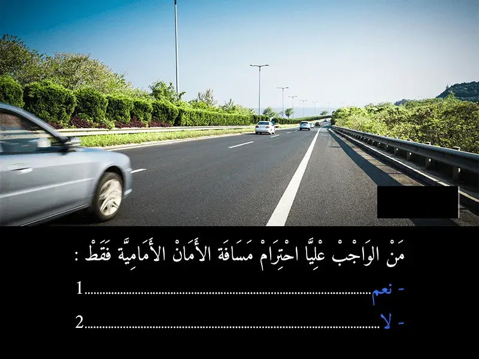
الجواب الصحيح: 2
من الضروري نحترم مسافة الأمان ليس فقط الأمامية ولكن حتى في الجوانب والخلفية. هادشي كيساعد باش نتفادى الحوادث ونضمن سلامة الجميع فالطريق. مسافة الامان الامامية والخلفية ومن الجوانب الكافية كتخليني نوقف الطوموبيل بأمان إلا وقع شي طارئ قدامي، وكتعطي فرصة لباقي السائقين باش يتصرفو حتى هما بلا ما يصطدمو بيا. يعني خاصك تكون واعي بمسافة الأمان من جميع الجهات. الجواب الصحيح هو رقم 2.
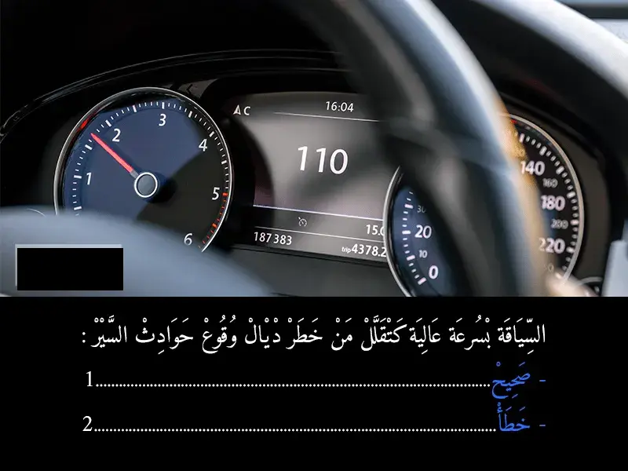
الجواب الصحيح: 2
السياقة بسرعة عالية ما كاتقللش من خطر ديال وقوع حوادث السير. السياقة بسرعة كبيرة كاتزيد من خطر وقوع الحوادث، ماشي العكس. كلما كانت السرعة عالية، كلما كان عندك وقت أقل باش تتفاعل مع الطوارئ ولا توقف الطوموبيل. السرعة الكبيرة كتزيد من المسافة اللي كاتحتاجها باش توقف، وكتزيد حتى من شدة الاصطدام إلا وقع حادث. يعني، باش تبقى آمن وتقلل من خطر الحوادث، خاصك ديما تحترم السرعة المحددة وتكون حذر. الجواب الصحيح هو رقم 2.
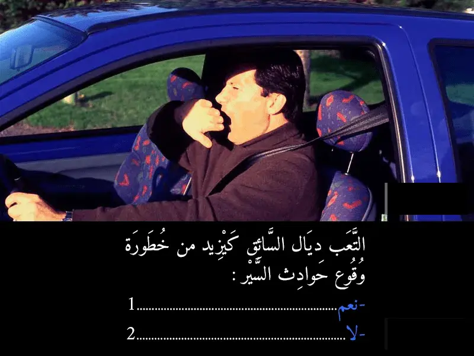
الجواب الصحيح: 1
منين كيكون السائق عيان، التركيز ديالو كينقص وردة الفعل ديالو تصبح بطيئة. هادشي كيزيد من احتمال وقوع الحوادث حيث ما كيبقاش قادر يتفاعل بسرعة مع الطوارئ ولا يتحكم مزيان في الطوموبيل. السائق اللي عيان يمكن ليه ينعس وهو سايق، ولا يفقد التركيز فالمسار ديالو، وهادشي خطر بزاف. باش نتجنب هاد المخاطر، ينصح باخذ استراحة كل ساعتين على الأقل، وتجنب تناول الأدوية اللي كاتسبب النوم. الجواب الصحيح هو رقم 1.
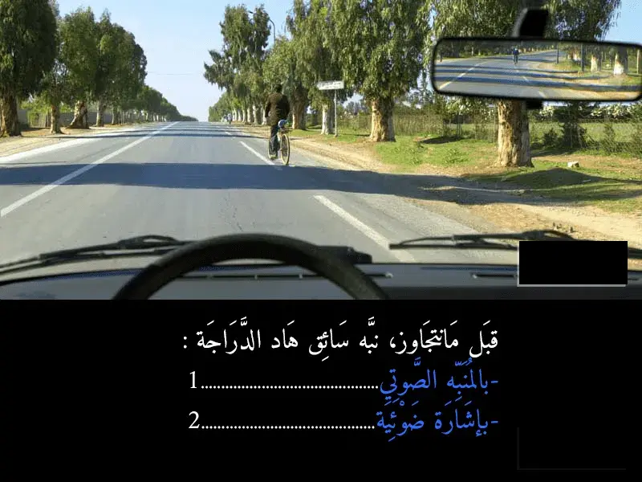
الجواب الصحيح: 1
قبل ما تتجاوز شي واحد كايسوق الدراجة الهوائية، يجب تنبيهه لكي يعرف بلي غادي تتجاوز. أفضل طريقة هي تستعمل المنبه الصوتي (الكلاكسون) حيث الصوت كيسمعوه بوضوح وكينبههم بسرعة بما انه نتواجد في الفترة الصباحية ولا يوجد مرايا التي سوف تساعد سائق الدراجة الهوائية لرؤية التنبيه بالإشارة الضوئية. الإشارة الضوئية ممكن تكون مفيدة في الفترة اللّيلية ولكن الصوت هو الأفضل فهاد الحالة. الجواب الصحيح هو رقم 1.
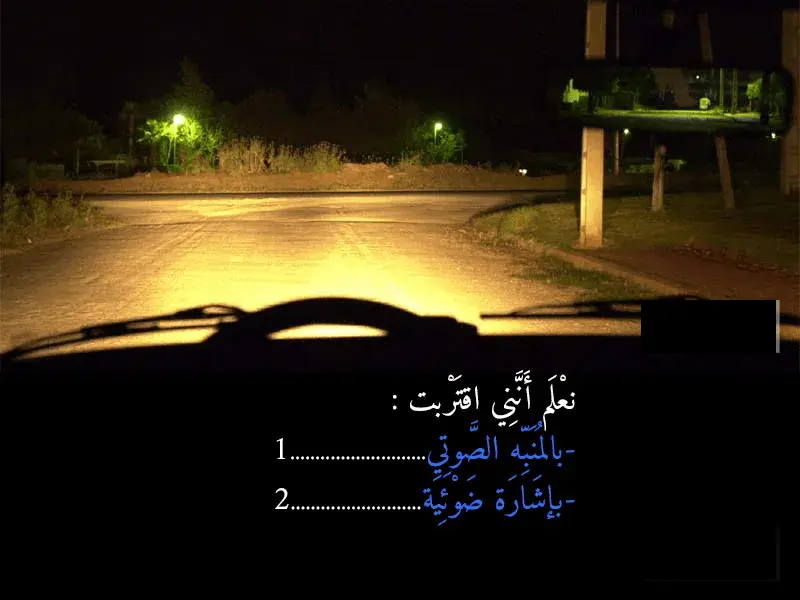
الجواب الصحيح: 2
فالليل، الإشارة الضوئية كتكون أكثر فعالية وأمان باش تعلم السائقين الآخرين بلي قربت منهم. الضوء كيبان مزيان فالظلام وكيساعد باش السائقين يشوفوك بوضوح ويتفاداو أي خطر. استعمال المنبه الصوتي فالليل ممنوع حيت كيزعج الناس وكيخليهم يرتابو، ولكن الإشارة الضوئية كتعطي تنبيه واضح وآمن بلي كاين شي حركة أو تغيير فالطريق. الجواب الصحيح هو رقم 2.
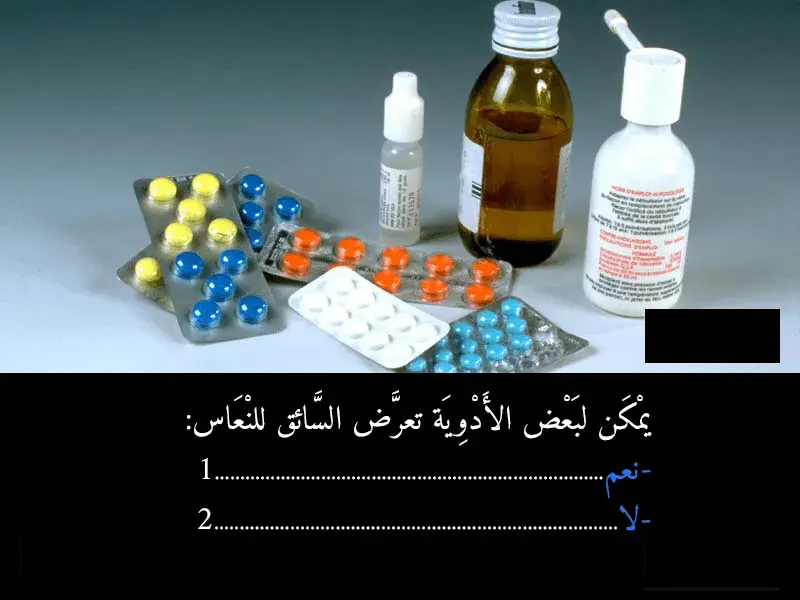
الجواب الصحيح: 1
بعض الأدوية كيتكون عندها تأثيرات جانبية كتسبب النعاس والعياء، وهادشي كيزيد من خطر وقوع الحوادث. ملي السائق يكون عيان ولا نعسان، التركيز ديالو كينقص وردة الفعل تصبح بطيئة. باش نتفادى هاد المخاطر، خاص السائق يقرا النشرة المرافقة للأدوية ويشوف واش فيها تأثيرات جانبية بحال النعاس. إلا كانت كينا، من الأفضل لا يسوق ويقوم بإستشارة الطبيب. السلامة ديال السائق والناس اللي معاه فالطريق هي الأهم. الجواب الصحيح هو رقم 1.
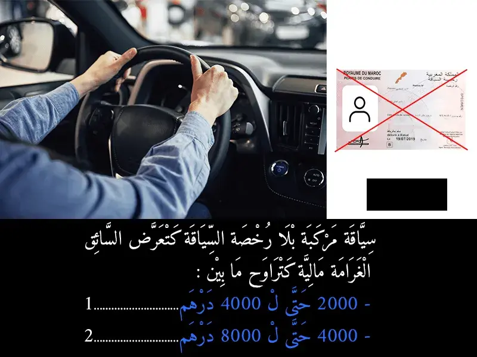
الجواب الصحيح: 1
حسب المادة 148 من مدونة السير، يعاقب بغرامة من ألفين (2.000) إلى أربعة آلاف (4.000) درهم، كل شخص يسوق مركبة تتطلب سياقتها الحصول على رخصة سياقة دون أن يكون حاصلا على تلك الرخصة. يعاقب المخالف، علاوة على ذلك، بالحرمان من الحصول على رخصة السياقة لمدة أقصاها ثلاثة (3) أشهر. وأيضا، المادة 149 لها علاقة بالمادة 148، حيث تقول: في الحالات المشار إليها في المادة 148 أعلاه، توقف المركبة في مكانها إلى أن يقوم بسياقتها سائق حاصل على رخصة سياقة من نفس صنف المركبة يقترحه المخالف أو، عند الاقتضاء، مالك المركبة أو حائزها. وإذا تعذر ذلك، جاز للأعوان محرري المحاضر اتخاذ كافة التدابير الضرورية لإيداع المركبة بالمحجز على نفقة المالك. الجواب الصحيح هو رقم 1.
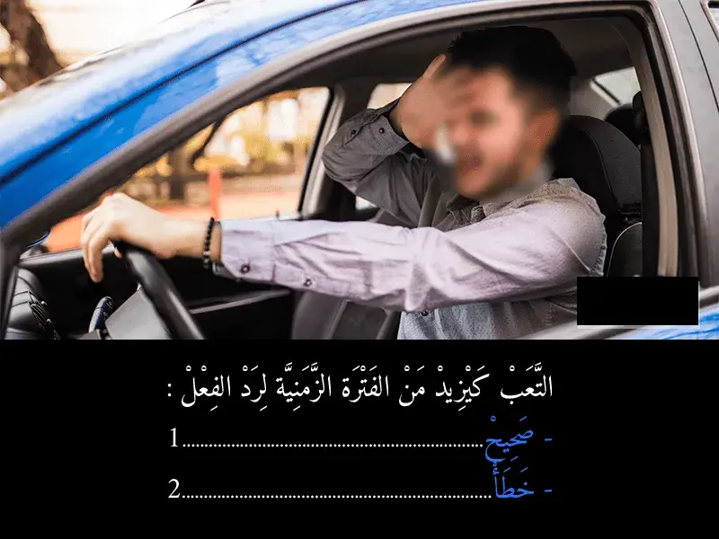
الجواب الصحيح: 1
إلى كنت عيان، العقل ديالك كياخذ وقت أطول باش يرد الفعل على شي طارئ فالطريق. هادشي كيعني بلي غادي تحتاج وقت بزاف باش توقف الطوموبيل ولا تتفادى الحوادث. التعب كيخلي التركيز ينقص وردة الفعل تصبح بطيئة، وهادشي كيزيد من خطر الحوادث. باش تبقى آمن فالطريق، خاصك ديما تكون مرتاح وتاخد راحة كافية قبل ما تسوق. الجواب الصحيح هو رقم 1.
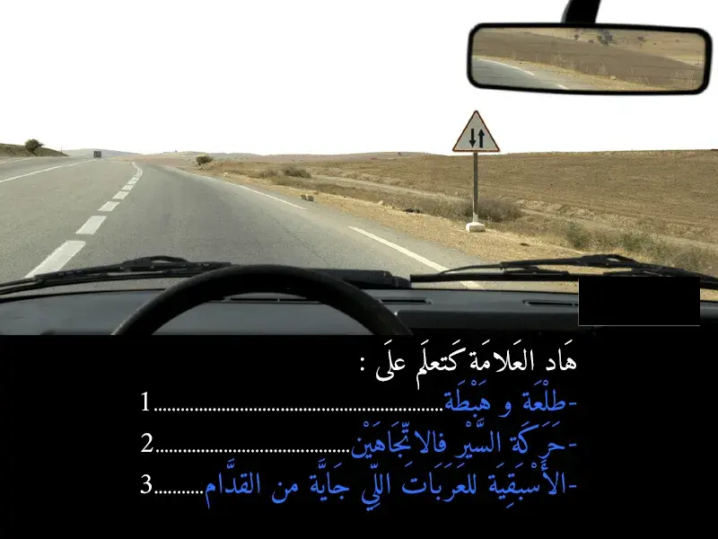
الجواب الصحيح: 2
العلامة الطّرقية تعني خطر السّير في الإتّجاهين. إبتداء من العلامة. من الواجب عليا نشد ليمن ديالي، وننقص من السُّرعة. وهاد العلامة ماكاتْعْتَابْرْشْ علامة متقدِّمة بل علامة وضعية، لأن الإعلان على الخطر غادي يكون ابتداء من العلامة وليس على بعد 50 متر داخل التجمعات العمرانية او على بعد 150 متر خارج التجمعات العمرانية. الجواب الصحيح رقم 2.
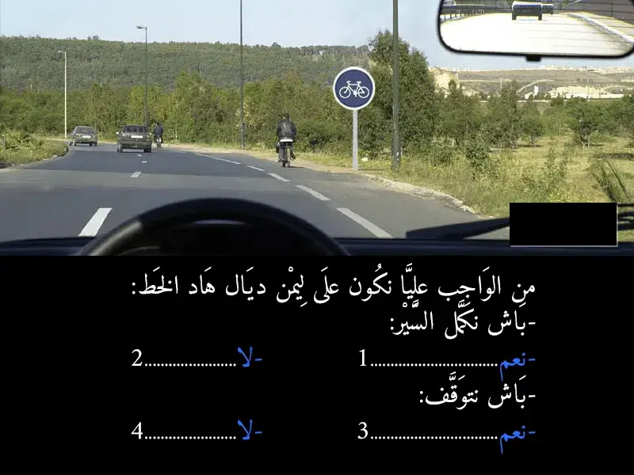
الجواب الصحيح: 2 و 4
العلامة الطّرقية تعني ممر إجباري على الدّراجات، وممنوع على جميع مستعملي الطّريق الاخرين السّير فهاد الممر أو الوقوف او التوقّف فيه. السائقين ديال السيارات ما خاصهمش يمشوا ولا يوقفوا في هاد الممر. خاص ديما السائق يسوق في المسلك المخصص له، وكل هذا لضمان السلامة ديال الدراجين وتفادي أي حادث. الجواب الصحيح هو رقم 2 و 4.
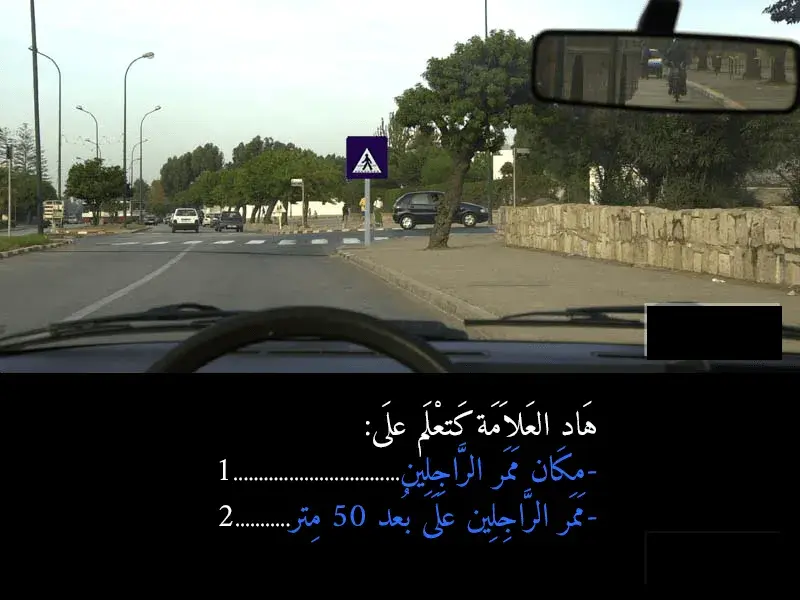
الجواب الصحيح: 1
العلامة الطّرقية الظاهرة في الصورة فهي تعلم على وجود ممر الرّاجلين في ذلك المكان. من الواجب عليا ننقص من السرعة ونسمح للرّاجلين اللّي دْخْلوا في الممر إِدُوزُو. الجواب الصحيح هو رقم 1.
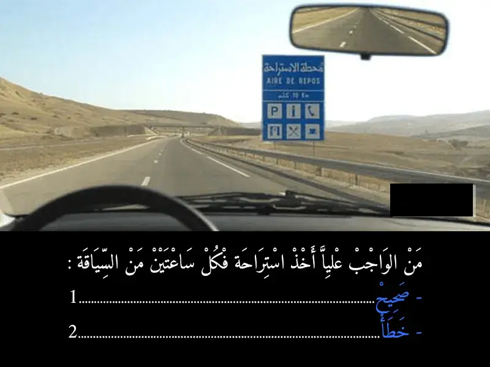
الجواب الصحيح: 1
إلى كنت سايق(ة) لفترة طويلة، خاصك توقف(ي) تاخد(ي) استراحة كل ساعتين. هاد الراحة كتعاون باش ترجع(ي) التركيز ديالك وتنقص(ي) من التعب. السياقة لفترة طويلة بلا توقف كاتسبب العياء، والعياء كيقلل من قدرتك على التركيز ورد الفعل بسرعة، وهادشي كيزيد من خطر الحوادث. لذلك، باش تبقى الشخص آمن فالطريق، ضروري ياخد استراحة قصيرة كل ساعتين، يتحرك شوية، يشرب الماء، وينعس إلى كان ضروري. هادشي غادي يعاونو باش يكمل الطريق بأمان. الجواب الصحيح هو رقم 1.
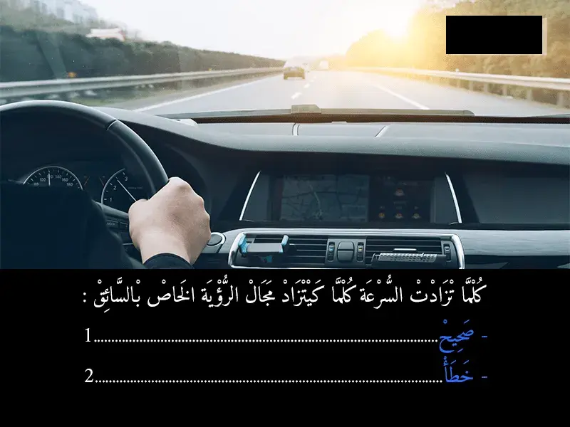
الجواب الصحيح: 2
ملي كتزاد السرعة، كيتقلص مجال الرؤية ديال السائق. هادشي كيعني بلي السائق كيولي يشوف غير قدامو بشكل مباشر، وكينقص الانتباه ديالو للحوايج اللي كاينين على الجوانب. هاد الظاهرة كتعرف بـ (تضييق الرؤية) وكتوقع حيت العقل ديال السائق كيولي مركز بزاف على الطريق اللي قدامو وكيهمل الجوانب. هادشي كيزيد من خطر وقوع الحوادث حيت السائق ما كيبقاش قادر يشوف المخاطر اللي ممكن تجي من الجوانب. باش تبقى آمن، خاصك تحافظ على سرعة معقولة وتكون منتبه لجميع الاتجاهات. الجواب الصحيح هو رقم 2.
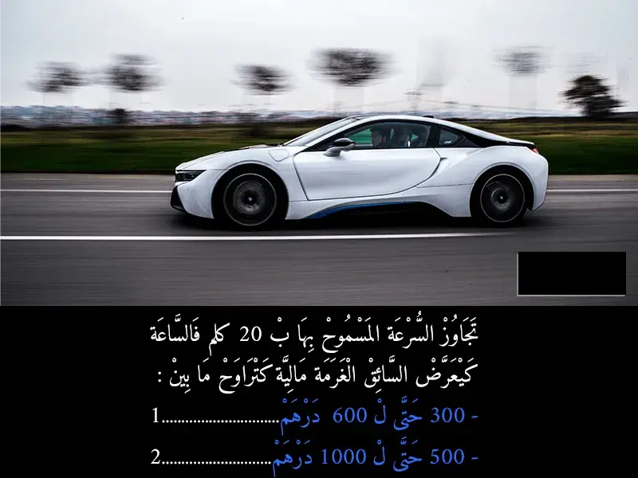
الجواب الصحيح: 2
تجاوز السرعة القصوى المسموح بها بعشرين (20) إلى أقل من ثلاثين (30) كلم في الساعة تعتبر مخالفة من الدرجة الثانية، ويعاقب المخالف بغرامة من خمسمائة (500) إلى ألف (1.000) درهم. الجواب الصحيح هو رقم 2.
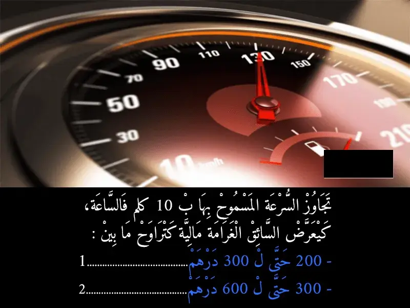
الجواب الصحيح: 2
تجاوز السرعة القصوى المسموح بها بعشرة (10) إلى أقل من عشرين (20) كلم في الساعة تعتبر مخالفة من الدرجة الثالثة، ويعاقب المخالف بغرامة من ثلاثمئة (300) إلى ستمائة (600) درهم. الجواب الصحيح هو رقم 2.
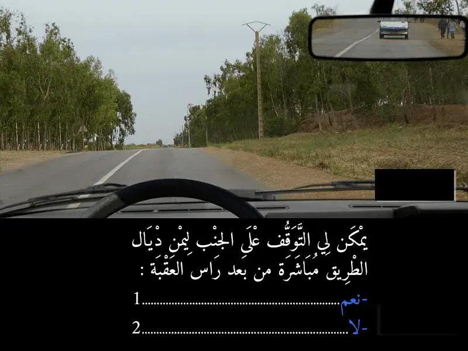
الجواب الصحيح: 2
في هاد الحالة فإنه نتواجد قرب رأس عَقْبَة، من بعد رأس العقبة، الرؤية كاتكون محدودة بزاف للسائقين اللي جايين من الخلف. إلى وقفت مباشرة من بعد رأس العقبة، كتعرض نفسك وباقي السائقين لخطر الاصطدام حيث ما كيعرفوش بوجودك حتى يقربو منك بزاف. باش تبقى آمن وتجنب الحوادث، خاصك تختار بلاصة بعيدة على رأس العقبة، في مكان لي فيه الرؤية واضحة وكافية لجميع السائقين. الجواب الصحيح هو رقم 2.
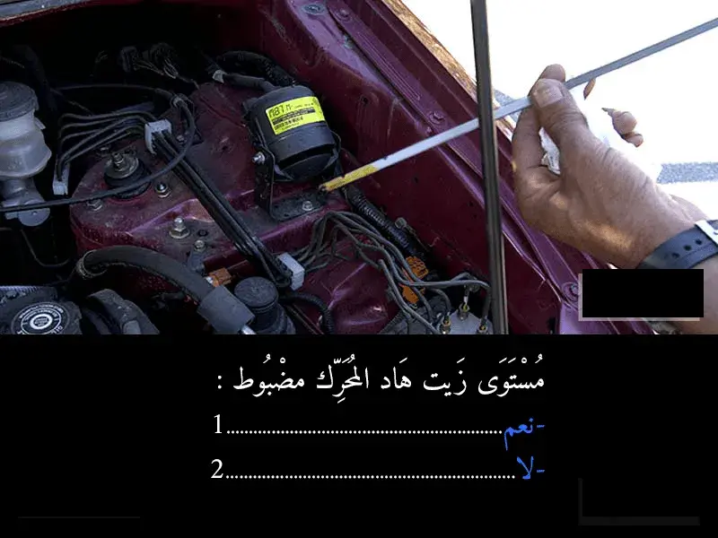
الجواب الصحيح: 1
في الصورة يظهر لنا أن مستوى الزيت على القياس كيبان بلي راه بين العلامتين اللي كيبينو المستوى الأدنى والمستوى الأقصى. هادشي كيعني بلي مستوى الزيت مضبوط ومزيان، والمحرك غادي يخدم بكفاءة وما كاينش خطر ديال التلف بسبب نقص الزيت. ديما خاصك تراقب مستوى الزيت بانتظام باش تتأكد بلي راه فالمستوى المناسب وتحافظ على صحة المحرك. الجواب الصحيح هو رقم 1.
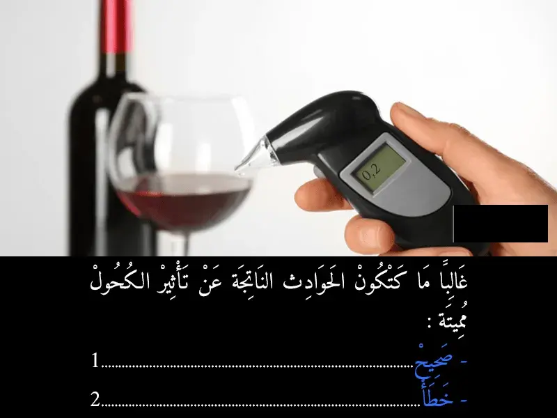
الجواب الصحيح: 1
السياقة تحت تأثير الكحول كتشكل خطر كبير على السائق وعلى الناس الآخرين فالطريق. الكحول كيأثر على القدرة ديال السائق على التركيز، وكيبطأ ردة الفعل، وهادشي كيزيد من احتمال وقوع الحوادث. بزاف من هاد الحوادث كيكونو مميتين حيت السائق ما كيكونش قادر يتصرف بسرعة ويتفادى الاصطدام. باش نتفاداو هاد المخاطر، من الأفضل ما نسوقوش نهائيا إلا كنا شاربين الكحول. السلامة ديالنا وديال الناس اللي معانا فالطريق هي الأولوية. الجواب الصحيح هو رقم 1.
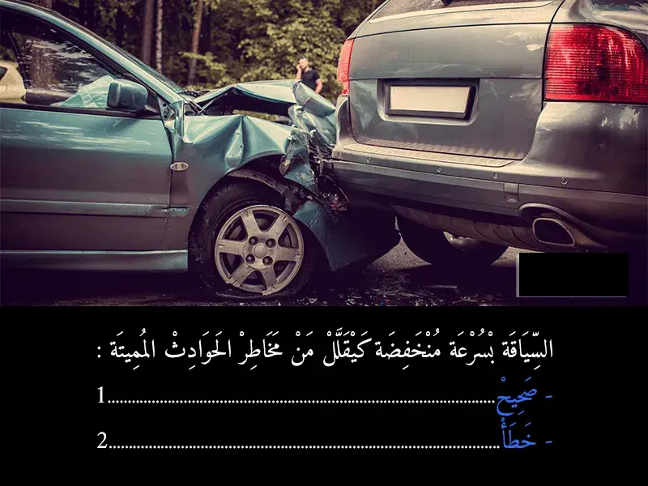
الجواب الصحيح: 1
عند السياقة بسرعة منخفضة كاتكون عندنا القدرة باش نتحكمو مزيان فالطوموبيل ونتفاعلو بسرعة مع أي طارئ فالطريق. السرعة المنخفضة كتنقص من شدة الاصطدام إذا وقع حادث، وهادشي كيقلل من خطورة الإصابات أو الوفاة. بالإضافة، ملي كنسوقو بشوية، كاتكون عندنا رؤية أوضح ونقدروا نردوا البال للناس اللي راجلين ولا الدراجات. السلامة ديالنا وديال الناس اللي معانا فالطريق كتزيد ملي نحترمو السرعة المحددة ونسوقو بشوية. الجواب الصحيح هو رقم 1.
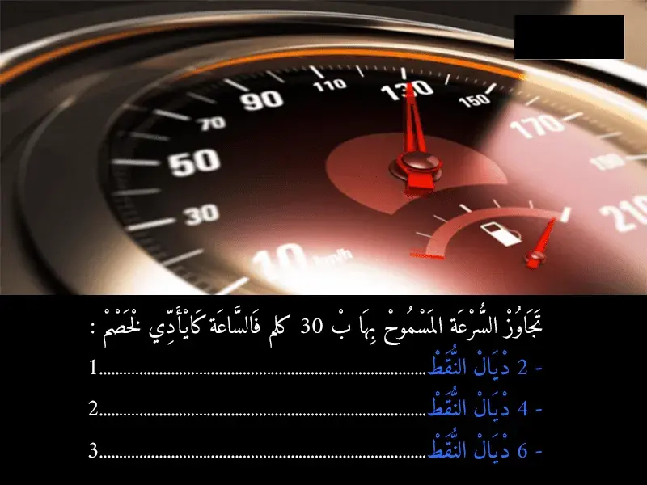
الجواب الصحيح: 1
يعاقب كل شخص ارتكب مخالفة من الدرجة الأولى بغرامة من سبعمائة (700) إلى ألف وأربعمائة (1.400) درهم عند تجاوز السرعة القصوى المسموح بها بثلاثين (30) إلى أقل من خمسين (50) كيلومترا في الساعة، بالإضافة إلى خصم 2 نقاط من رصيد رخصة السياقة. الجواب الصحيح هو رقم 1.
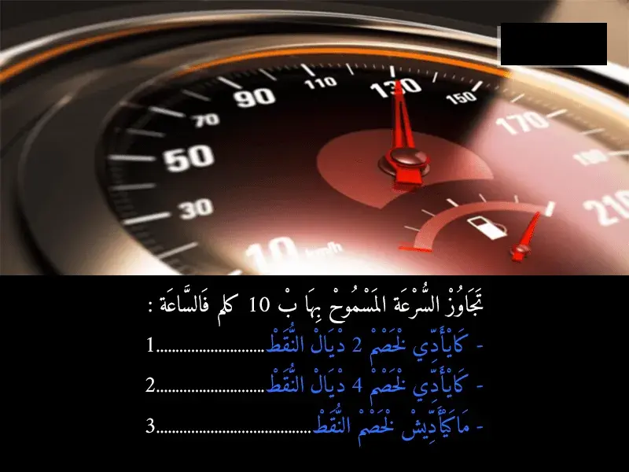
الجواب الصحيح: 3
تجاوز السرعة القصوى المسموح بها بعشرة (10) إلى أقل من عشرين (20) كلم في الساعة تعتبر مخالفة من الدرجة الثالثة، ولا يتم خصم نقاط من رصيد رخصة السياقة بل يعاقب المخالف فقط بغرامة من ثلاثمئة (300) إلى ستمائة (600) درهم دون خصم نقاط رخصة السياقة. الجواب الصحيح هو رقم 3.
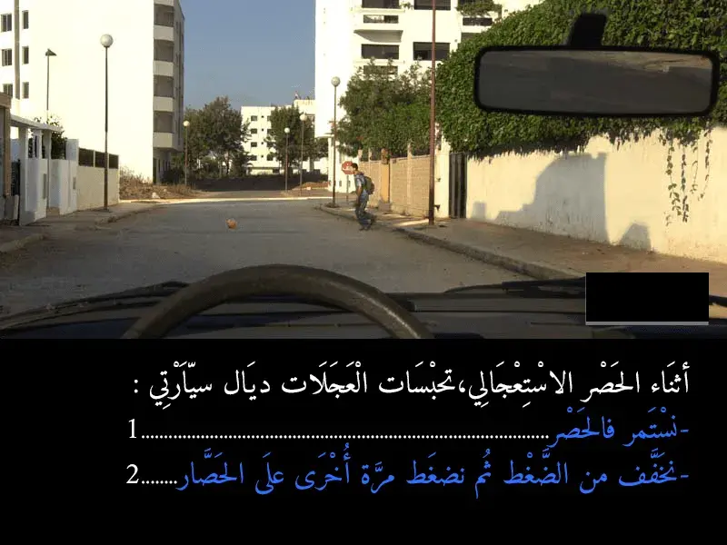
الجواب الصحيح: 2
إلى كنتي كاتدير الحصر الاستعجالي والعجلات ديال سيارتك تحبسات (يعني تزلقات وما بقاتش كاتوقف مزيان)، الحل الأفضل هو تخفف شوية من الضغط على الفرامل ثم تعاود تضغط مرة أخرى. هاد التقنية كتسمى (الحصر المتقطع) وكتعاون باش ترجع السيطرة على السيارة وتوقفها بأمان. الاستمرار في الضغط على الفرامل بلا ما تخفف يمكن يزيد من الزلاقة وما يخليكش توقف فالمسافة اللي بغيتي. ديما خاصك تكون حذر وتستعمل هاد التقنية باش توقف السيارة بأمان وتجنب الحوادث، خصوصا إلى كان كاين شي طفل ولا خطر قدامك. الجواب الصحيح هو رقم 2.
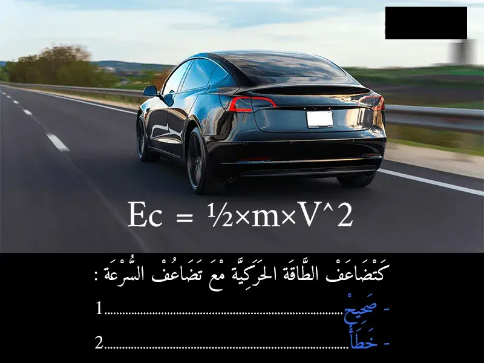
الجواب الصحيح: 2
الجواب: لا، الطاقة الحركية كاتزاد بأكثر من الضعف. باش نشرحو مزيان هاد السؤال ويبقى واضح ومفهوم ليكم: العبارة Ec = 1/2 x m x V^2 كتعني بلي الطاقة الحركية (Ec) ديال السيارة كتعتمد على الكتلة (m) ديالها وعلى السرعة (V) مربعة. يعني ملي كتضاعف السرعة ديالك، الطاقة الحركية كاتزاد بربع السرعة. مثلا، إلا سرعتك تضاعفت من 20 كلم/ساعة لـ 40 كلم/ساعة، الطاقة الحركية كاتزاد بأربع مرات، ماشي غير بالضعف. هادشي كيعني بلي ملي كتزاد السرعة، الطاقة الحركية كاتزاد بشكل كبير، وهادشي كيزيد من خطورة الحوادث وشدة الاصطدام. باش تبقى آمن، خاصك تحترم السرعة المحددة وتفهم بلي زيادة السرعة كيزيد من الطاقة الحركية وكيرفع من خطورة الحوادث. الجواب الصحيح هو رقم 2.
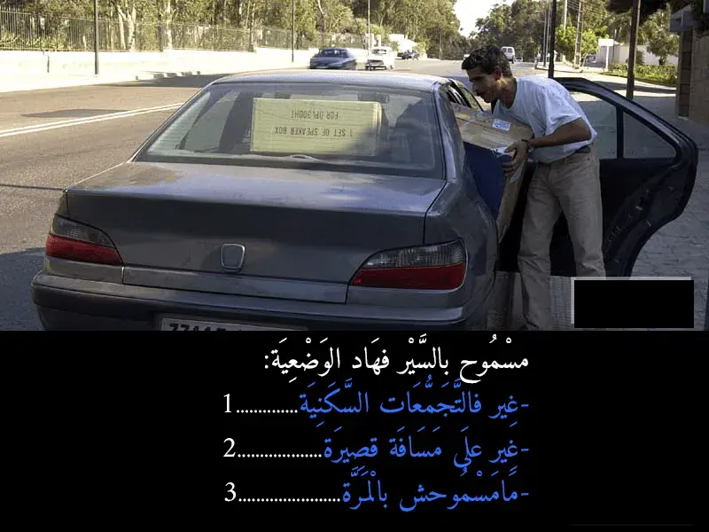
الجواب الصحيح: 3
إلى كنت كتحمل الأمتعة والصناديق فسيارتك وغطيت الزجاج الخلفي، هادشي كيعني بلي ما غاديش تقدر تشوف الطريق من الخلف. هاد الوضعية ما مسموحاش بالمرة حيث كاتعيق الرؤية ديالك وكاتزيد من خطر وقوع الحوادث. الرؤية الواضحة لكل الجهات ضرورية باش تضمن سلامتك وسلامة الآخرين فالطريق. خاصك دائما تضمن بلي الزجاج الخلفي باين ومكشوف وما مغطاش باش تقدر تراقب الطريق والمركبات من الخلف بوضوح. الجواب الصحيح هو رقم 3.
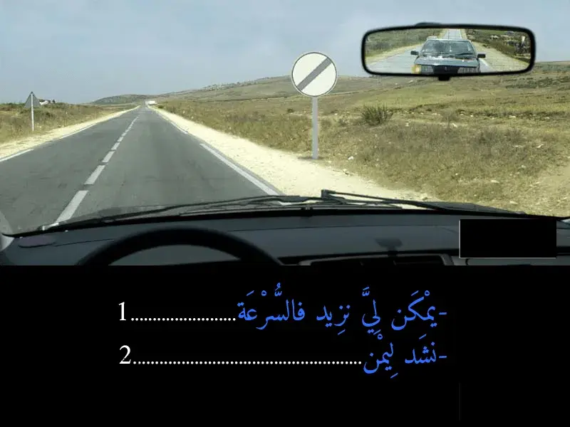
الجواب الصحيح: 2
عندما توجد عربة تستعد لتجاوزي فيجب علي في هذه الحالة عدم الزيادة وعدم الإنقاص من السرعة، بل يجب علي الحفاظ على السرعة التي أسير بها ونشد ليمن باش نسهل عملية التجاوز بالنسبة للعربة التي تستعد لتجاوزي. هادشي كيساعد على تسهيل المرور ويمنع وقوع الحوادث. الجواب الصحيح هو رقم 2.